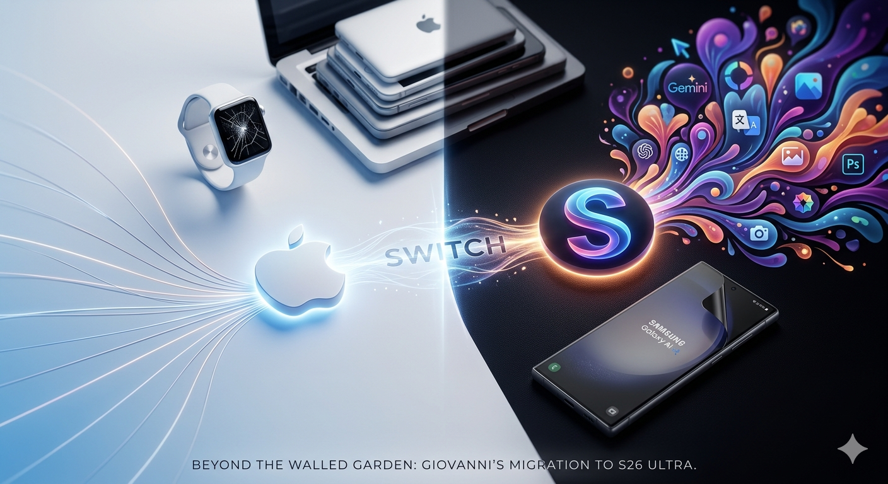

Addio al Giardino Recintato: La mia migrazione da Apple a Samsung S26 Ultra
By: Giovanni De Costanzo | #Android #Apple #iOS #iPhone #Samsung #Galaxy S26 Ultra #Cloud #IA #AI #Siri #Gemini

Dopo oltre un decennio di fedeltà assoluta alla "Mela", ho spento il mio iPhone 15 Plus e ho inserito la SIM in un Samsung Galaxy S26 Ultra. Non è stata una scelta impulsiva, ma il culmine di un processo di consapevolezza iniziato quando le prime crepe hanno incrinato quella perfezione che chiamiamo Ecosistema Apple.
Le origini: un amore nato all'Università
Tutto è iniziato nel 2011 con un MacBook Pro 13", il mio compagno di studi. Da lì, l'effetto domino è stato inarrestabile: l'iPad mini, l'iPod Touch e infine il mio primo iPhone, il 5S. Per anni ho vissuto quella magia dell'integrazione perfetta. Apple Watch (2016), Apple TV (2019) – che ancora oggi fa il suo dovere egregiamente – e una sequenza di iPhone dal 6S al 12 Pro Max, fino al recente 15 Plus. Tuttavia, negli ultimi anni, qualcosa ha iniziato a scricchiolare. L'innovazione è diventata pigra, i modelli quasi fotocopia e i prezzi... beh, i prezzi sono diventati follia. La goccia che ha fatto traboccare il vaso? 160€ richiesti per riparare il vetro del mio secondo Apple Watch. Lì ho capito che era il momento di guardarmi intorno.
Diventare "Platform Agnostic"
Il primo passo verso la libertà è stato il ritorno al PC Gaming desktop. Tornare a Windows dopo vent'anni mi ha fatto capire che la convivenza è possibile. Ho iniziato a cercare soluzioni che non fossero platform-locked:
- Addio iCloud Foto, benvenuto Immich e Synology
- Addio Apple Notes e iCloud Drive, benvenuto Nextcloud
Una volta reso il mio workflow indipendente dall'hardware, il salto allo smartphone era l'ultimo tassello. Mentre Apple restava indietro sull'IA con una Siri ferma a 15 anni fa e una "Apple Intelligence" che ha tagliato fuori il mio iPhone 15 Plus quasi subito, il mondo Android correva.
L'impatto con S26 Ultra: Luci e Ombre
Passare a Samsung non è stato un percorso tutto rose e fiori. Sebbene Smart Switch sia superlativo, la migrazione di WhatsApp è stata traumatica, richiedendo diversi tentativi prima di andare a buon fine.
Cosa mi manca di iOS:
- CarPlay vs Android Auto: Sulla mia nuova 3008, CarPlay gestiva meglio l'integrazione delle mappe nel display driver. Android Auto sembra ancora un passo indietro su questo fronte
- L'App Comandi (Shortcuts): Qui Apple vince ancora. La semplicità e la potenza di Comandi sono imbattibili. Su Samsung, né le Routine native né Macrodroid (molto potente ma decisamente spartano) mi hanno permesso di automatizzare facilmente la disattivazione della seconda SIM in fasce orarie prestabilite.
- App Terze: Sorprendentemente, alcune app per la gestione del NAS Synology sono sviluppate meglio su iOS che su Android.
Dove Samsung (e l'IA) vince a mani basse:
- Integrazione con Gemini: L'editing delle foto, il filtro chiamate con risposte automatiche e la traduzione live sono feature "Wow" che rendono lo smartphone uno strumento realmente intelligente.
- Privacy Display: Una funzione pazzesca gestita via software/hardware che oscura la visuale laterale senza dover applicare pellicole fisiche.
- Personalizzazione: Il livello di controllo sul sistema è anni luce avanti a iOS.
- Messaggi Vocali su Android Auto: Finalmente posso ascoltare i vocali di WhatsApp e Telegram alla guida, una mancanza di CarPlay che mi faceva impazzire.
La gestione dei dati: un approccio da "Smanettone"
Per integrare Nextcloud nel file manager di Samsung (My Files), ho dovuto faticare un po'. A differenza di iOS, dove l'integrazione è nativa, su Android ho optato per Autosync per mantenere una cartella locale sincronizzata bidirezionalmente. Questo mi permette di modificare un PDF e salvarlo senza dover fare download e upload manuali ogni volta. Per le AirPods, uso app di terze parti per monitorare la batteria, mentre per gli AirTag... beh, quelli sono rimasti nel cassetto, un piccolo prezzo da pagare per la libertà.
Conclusioni
Il passaggio a Samsung S26 Ultra mi ha confermato una cosa: non esiste il dispositivo perfetto, ma esiste il dispositivo giusto per il proprio momento tecnologico. Oggi, l'innovazione abita altrove. Apple rimane una scelta di comfort, ma per chi vuole sperimentare con l'IA, gestire i propri dati in autonomia e avere un assistente vocale che capisca davvero cosa stai dicendo, il salto è quasi obbligato. In attesa di vedere cosa farà Siri 2.0, mi godo il mio nuovo giocattolo. E voi? Siete ancora prigionieri del giardino recintato o state pensando di scavalcare il muro?